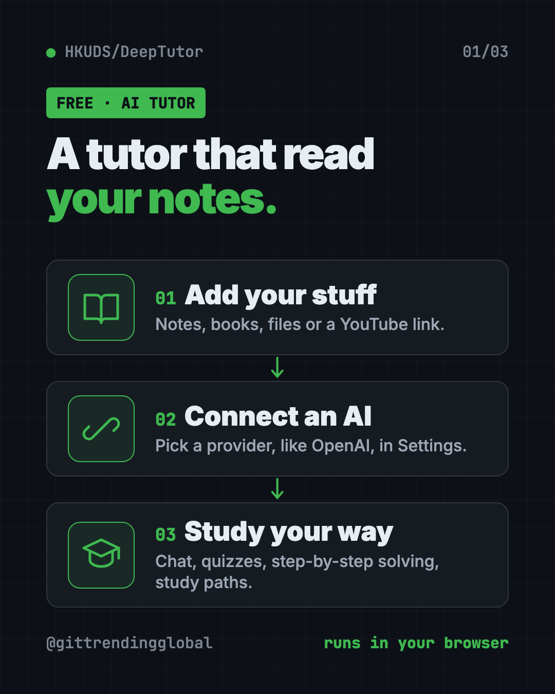
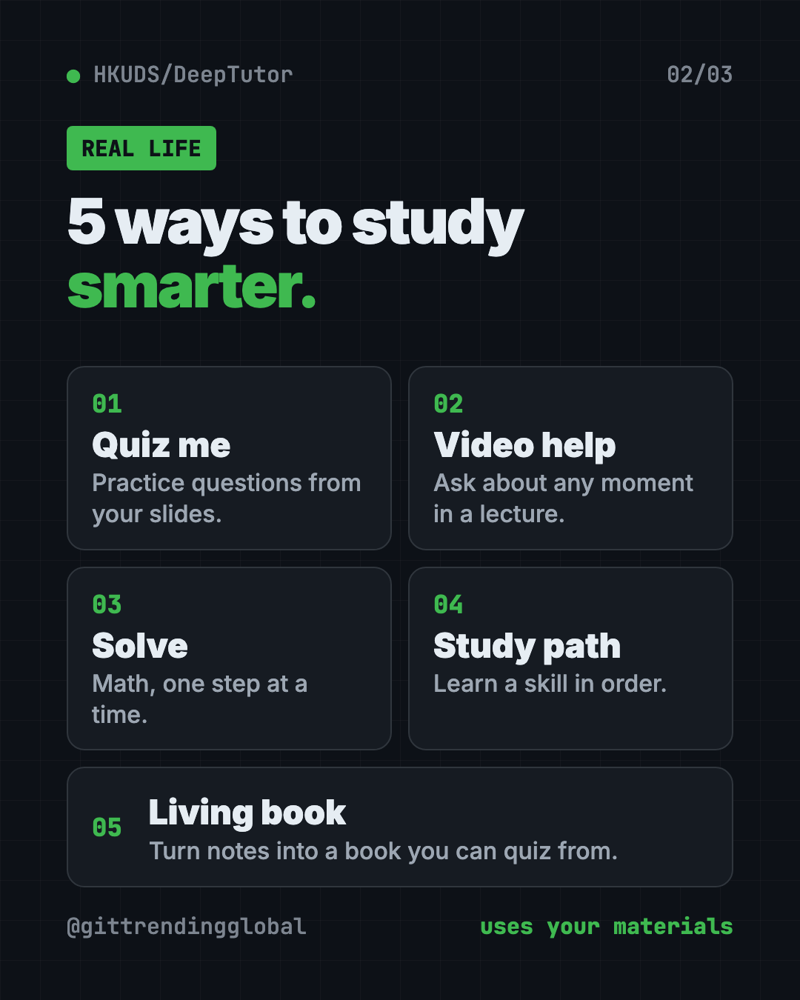
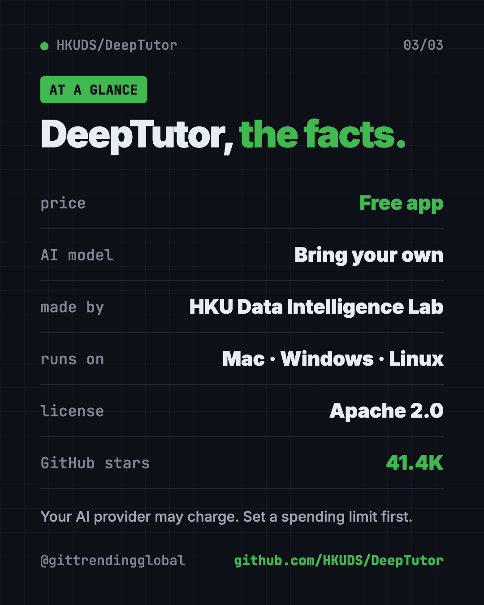
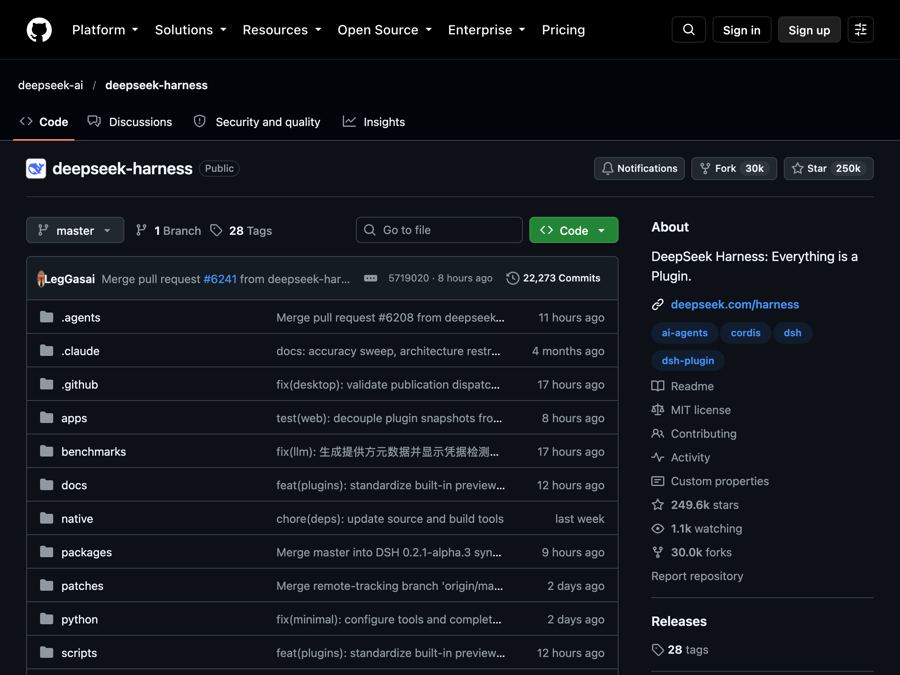

DeepTutor: Free AI Tutor That Learns From Your Notes
DeepTutor is a free AI tutor that answers questions, makes quizzes and builds study plans from your own notes, books and videos. Here's how to set it up.
DeepTutor is a free ai tutor that studies from your own notes, textbooks and videos. You chat with it, take quizzes it makes, and follow study paths built from the stuff your class actually uses.
It's late, you're stuck on a chapter, and a private tutor costs a lot. A general chatbot hasn't read your slides. DeepTutor can. This guide shows what it does and how to set it up.
Key takeaways
- Free and open source. Apache 2.0 license, about 41.4K GitHub stars.
- Works from your materials. Add files, notes or a YouTube link, and the tutor answers based on them.
- Many study modes. Chat, Quiz, Solve, Research, Course Study, Mastery Path and more.
- Bring your own AI. It doesn't include an AI brain. You connect a provider, like OpenAI, in Settings.
- Runs on your computer. You use it in your web browser at a local address.
What is DeepTutor?
DeepTutor comes from HKUDS, the Data Intelligence Lab at the University of Hong Kong. It launched on December 29, 2025, and passed 40K stars in nine months, the team says.
Its makers call it a learning workspace. In plain words, it's one place to chat with a tutor, practice with quizzes, research a topic, write notes and track what you've learned.
The key idea: everything can draw on your own materials. Your textbook, your lecture notes, your saved chats. So answers stay close to what you need for your course.
What can this free AI tutor do?
Here are the main parts, all from the README:
- Chat and Solve. Ask questions, or walk through a problem step by step.
- Quiz and Question Bank. Turn materials into practice questions. Answers and mistakes are saved.
- Course Study and Mastery Path. Guided paths that take you through a subject in order.
- Video learning. Add a YouTube or Bilibili link. It plays the video, searches the transcript and tutors you on what was said at each moment.
- Book. Turns your sources into a "living book" you read inside the app. It shows you a chapter outline first, so you approve the shape.
- Co-Writer. A writing space with live preview. Import a Word file, and export as Markdown or Word.
- Task Board. To do, In progress and Done columns for study tasks.
- Memory you can see. What it remembers about you is visible and editable.

How to use DeepTutor (real examples)
- Cram for a biology test. Add your lecture slides. Ask it to make 20 quiz questions on chapter 4, then review the ones you got wrong.
- Understand a long lecture video. Paste the YouTube link. Pause at the confusing part and ask, "What did she mean here?"
- Solve math homework step by step. Use Solve mode to see each step, not just the answer.
- Learn a new skill as an adult. Pick a topic and follow a Mastery Path, one piece at a time.
- Turn class notes into a study guide. Use Book to build a living book from your notes, then read and quiz from it.

💡 Tip: Ask the tutor to quiz you before it explains. Trying first, then checking, shows you what you really know.
Who is DeepTutor for?
- High school and college students studying for exams.
- Adult learners picking up a skill on their own.
- Teachers and tutors building study material from their lessons.
- Parents. A multi-user mode has a Learner setting, and guardians can view reports and approve materials.
- Anyone who learns from YouTube and wants a tutor beside the video.
Is DeepTutor free?
The app is free and open source under the Apache 2.0 license.
The AI behind it may not be. DeepTutor doesn't ship its own AI model. You add a provider and its API key (a private password for that AI service) in Settings. Paid providers bill you for what you use.
⚠️ Heads up: Set a monthly spending limit with your AI provider before heavy study sessions. Long research reports and books use more of the AI than quick questions.
How to install DeepTutor
The fastest trial uses Docker, a free app that runs other apps in a sealed box. Install Docker Desktop from docker.com first and open it.
Then open Terminal (Mac or Linux) or PowerShell (Windows). Copy and paste this:
docker run --rm --name deeptutor \
-p 127.0.0.1:3782:3782 \
-v deeptutor-data:/app/data \
ghcr.io/hkuds/deeptutor:latest
Open http://127.0.0.1:3782 in your browser. Go to Settings, then Providers, and add your AI provider. Press Ctrl+C in the terminal when you're done. Your settings stay saved for next time.
Install without Docker
This path needs Python 3.11 to 3.14 and Node.js 20 or newer. Copy and paste this:
mkdir -p my-deeptutor && cd my-deeptutor
pip install -U deeptutor
deeptutor init
deeptutor start
deeptutor init asks for ports and your AI provider. Then open the address it prints, usually http://127.0.0.1:3782. Keep the terminal open while you study.

Let Claude or Codex set it up for you
Claude Code and OpenAI Codex are AI helpers that can run setup steps on your computer. You paste a request, they do the work, and you approve each step.
The DeepTutor README includes its own prompt for this. Copy and paste this:
Help me install and configure DeepTutor locally from https://github.com/HKUDS/DeepTutor.
Clone the repository, or reuse my existing checkout, and read SKILL.md and
docs-for-user/AGENT_SETUP.md first. Follow that guide to prepare the environment,
configure my model provider, verify the setup, and start the Web app.
Ask me for any missing provider, model, or credential-source information;
do not print API keys. Preserve my existing files and settings, and finish
with the access URL and the results of your checks.
Then try asking:
DeepTutor is running. Show me how to add my PDF notes as a knowledge base.
Install the "socratic-tutor" skill from EduHub in DeepTutor and explain what it does.
Which AI provider and model should I pick for DeepTutor if I want to keep costs low?
Can I add new teaching skills?
Yes. DeepTutor has a community hub called EduHub. It shares ready-made teaching skills, like Socratic tutors, flashcard builders, essay feedback and exam blueprints.
To find and add one, copy and paste this:
deeptutor skill search "socratic tutor"
deeptutor skill install socratic-tutor
DeepTutor at a glance
| Price | Free app (your AI provider may charge) |
| Works offline | No, it calls the AI provider you connect |
| Platforms | Mac, Windows, Linux, used in your browser |
| License | Apache 2.0 |
| Study modes | Chat, Quiz, Solve, Research, Course Study, Mastery Path and more |
| GitHub stars | About 41.4K |
| Best for | Students and self-learners who want a tutor that knows their material |
Our take
DeepTutor packs a whole study kit into one free app. The best part is simple: it learns from your stuff, not just the internet.
What we like:
- Answers grounded in your own notes, books and videos.
- Lots of ways to study: quizzes, step-by-step solving, guided paths.
- Memory you can see and edit.
- A one-command Docker trial.
- Parent and guardian controls in multi-user mode.
What to watch for:
- You need your own AI provider, which may cost money.
- So many features can feel like a lot on day one. Start with Chat and Quiz.
- It's a web app you run yourself, not a phone app.
- It updates often, so screens may change.
Building a study setup? Pair it with Open Notebook, a free private notebook for your research. Want to listen instead of read? Try Voicebox, which reads text aloud. From the same lab, see nanobot, a tiny AI assistant you own.
FAQ
Is DeepTutor really free?
Yes. The app is free and open source under the Apache 2.0 license. The AI provider you connect, like OpenAI, may charge for use.
Can DeepTutor make quizzes from my notes?
Yes. Its Quiz mode turns your materials into practice questions, and the Question Bank saves answers, explanations and your mistakes.
Does DeepTutor work with YouTube videos?
Yes. Add a YouTube or Bilibili link and it plays the video, searches the transcript and tutors you based on that moment.
Do I need to know coding to use DeepTutor?
Not much. The Docker trial is one command, and the rest happens in your browser. You can also ask Claude Code or Codex to set it up.
Is DeepTutor good for kids?
It has a multi-user mode with a Learner setting. Guardians can view reports, approve materials and reset sign-ins.
Who made DeepTutor?
HKUDS, the Data Intelligence Lab at the University of Hong Kong. It's shared on GitHub as HKUDS/DeepTutor.
Get DeepTutor: github.com/HKUDS/DeepTutor
Follow @gittrendingglobal on Instagram for one free, useful tool every day.
📲 Watch the 30-second video on Instagram
Keep reading

Recordly: Free Screen Recorder With Auto-Zoom (2026)
Recordly is a free screen recorder and editor for Mac, Windows and Linux. It adds auto-zooms, a smooth cursor, webcam bubbles and styled backgrounds.

Tolaria: A Free Offline Notes App You Fully Own (2026)
Tolaria is a free offline notes app for Mac, Windows and Linux. Your notes are plain files you own, with full version history and no account.

DeepSeek Harness: DeepSeek's Free Open-Source AI Agent
DeepSeek Harness is DeepSeek's free, open-source AI agent. Every feature is a plugin you can swap or build, and it runs in your browser with one command.